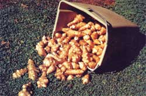

I'm told that about 90 species of sunflower grow in the world ... two-thirds of them right here on the North American Continent. If I had to pick just one variety of the plant to live with for the rest of my life, however, I don't think I'd have too much trouble deciding on the particular kind of sunflower that is known as the Jerusalem artichoke (Helianthus tuberosus).
Granted, the Jerusalem artichoke isn't much in some respects when you compare it to most of the rest of the sunflower family. It only grows from five to ten feet tall (other sunflowers sometimes stretch up 20 feet or more) and it has nothing at all in the center of its blossoms (where most sunflowers boast a large, brown disc loaded with oil-rich, edible seeds).
Then again, you can't always judge a book by its cover ... or a sunflower by its seeds. Because, buried beneath the surface of the earth, the modest little Jerusalem artichoke has hidden away something that the other sunflowers don't have: pints, quarts, peckssometimes even bushels -of a tasty, nutritious somewhat-potatolike tuber. A tuber, moreover, that you can harvest and enjoy throughout that long, cold portion of the year (winter) when so many other wild and cultivated fruits and vegetables are no longer available.
No one really seems to know how the Jerusalem artichoke got its name, since it's a native of this continent and it certainly is in no way related to the globe artichoke. There may be some truth, however, to stories about early U.S. and Canadian settlers corrupting into English ("Jerusalem") the names (girasol and girasole) that even earlier Spanish and Italian seamen and explorers had given to the tall, flowering plants they saw tended by native North Americans. And, perhaps, the "artichoke" part of the name did indeed evolve because the blossoms of these unusual sunflowers were sometimes boiled, buttered, and eaten much like the globe artichoke. Whatever, the Jerusalem artichoke seems stuck with its name now ... although there is a move underfoot in some gardening circles to redub it the "sunchoke".
Jerusalem artichokes are now cultivated by gardeners in many parts of the United States and Canada. They're also raised in Europe (especially around the Mediterranean) and other areas of the world. "Cultivated" and "raised" are probably not the right words to use when talking about these wild sunflowers, however, since they tend to grow so vigorously that once planted-they seldom require any additional care at all.
As a matter of fact, the Jerusalem artichoke is so hardy-especially in the eastern United Statesthat it tends to "jump the fence" of most gardens rather quickly, and then spread out along ditches, fence rows, country roads, streams, and into vacant fields entirely on its own. It's not at all uncommon to find the vegetable patch of a long-abandoned backwoods homestead entirely covered with a thick stand of the wild sunflowers. Still, the Jerusalem artichoke is such an ornamental and such a valuable plant, that I've never heard anyone call it a "weed". Helianthus tuberosus seems to carry its welcome with it wherever it goes.
Look for groups of plants that somewhat resemble cultivated sunflowers ... but with "bushier" clusters of much more slender (but hairy and leathery) stalks, and leaves that are both more pointed and narrower than those on garden-variety sunflowers. Too, as I've already mentioned, Jerusalem artichokes seldom ever grow more than 10 feet tall and their brightyellow flowers-which bloom in August and, generally, throughout September-completely lack the large, flat "pad" of seeds exhibited by most of their relatives.
These flowers are probably the most easily identified feature of the sunchoke and a September hike or two through a few of the lower-lying thickets and fields in your area (especially if you live east of the Mississippi) should be all the scouting you'll need to do to spot far more volunteer Jerusalem artichokes than you'll be able to harvest.
And, although you can dig a few of the plants' tubers right when you find them in September, you'll find them tastier if you wait and harvest these "wild potatoes" after the first frost. A further point: Jerusalem artichokes "store themselves" in the ground where they grow far better than you'll ever be able to keep the dug tubers in a root cellar or refrigerator. You're wise, then, if you dig only as many as you need for a week or so at any one time ... and simply let Mother Nature hold the rest for a later day. You'll find that this "easy does it" approach to the harvest of sunchoke tubers will keep you supplied with the vegetable right through the winter and well into March in most sections of the country.
One final note about the digging of Jerusalem artichoke tubers: As long as you leave a few for next year, it's impossible to harvest too many of these little "wild potatoes". Sunchokes positively thrive on this thinning process and-if anything-the more you dig, the more tubers a clump of the plants will produce.
If there are no volunteer sunchokes growing in your neck of the woods (or, for some reason you don't want to, or can't, harvest the wild sunflowers around you), you can still grow your own.
A number of seed companies handle the tubers, they frequently pop up in small town Farmers' Markets and health food stores, or you can even dig a few wild ones and transplant them to your garden. Whatever the source, plant your tubers in a sunny, wellwatered spot any time from mid-October to mid-December. And easy does it! If yours is an average family, there's probably no need to put more than three or four of the "potatoes" in the ground (remember, sunchokes tend to spread on their own) for starters. It's a good idea, too, to confine the plants to a bed which has a solid edging that can keep them contained.
Choose firm seedstock and plant the tubers in individual holes four to six inches deep and three to four feet apart. Loose, sandy soil is best (it makes later harvests easier) and the Jerusalem artichokes should be watered reg. ularly (whenever the ground isn't frozen) until they come up. No shoots will show for as long as a couple of months if the tubers are planted in the early fall or until spring if they're put in the ground during the winter. Do watch for the sprouts, though, and be prepared to stake them shortly after they peek out of the ground. The wind can play havoc with their limber stems.
Once your Jerusalem artichokes are started, the plants should need no further attentionyear after year-except for the annual winter harvest. Wait until after the first frosts of the season have killed the aboveground portions of the sunchokes. By the time the dead stalks have dried (about midOctober), the tubers are ready to dig. And be prepared to be surprised at the almost overwhelming number of "wild potatoes" you'll find clustered under each plant!
The elliptical leaves and stalks of the Jerusalem artichoke (even when dried) are covered with a number of hairs that can be irri tating to the skin. So cover up-long-sleeved shirt or jacket, full-length pants, etc.-before approaching your choke patch with digging tool in hand.
Make your first cut with a shovel at least two feet from the stem of a Jerusalem artichoke and then work toward the plant in a large circle. Proceed slowly and methodically (it's always a shock to find that you've sliced a tuber or two in half). Sift through the soil carefully to get all the smaller "potatoes". (You'll never get them all, however, nor do you want to. Thanks to the few you overlook, you'll soon be digging tubers from 20 to 25 plants ... without ever putting any more seedstock into the ground on purpose.)
The tubers will store superbly all by themselves right in the ground, so dig only what you can use in a week. (Even when refrigerated, these "potatoes" tend to wrinkle and shrivel. And, while this doesn't spoil them for cooking, it does make them hard to clean.) When you excavate only partway around a plant, be sure to push the loose dirt back into the hole to protect the remaining tubers until you want them later. You'll be able to dig the leftover "potatoes"-any time the ground isn't frozen-right through the winter and into next March.
Jerusalem artichokes have about the same food value as the more common Irish potato (another misnamed food) ... but with a very important difference: Their starch-especially early in the season-is largely in the form of inulin, instead of carbohydrate. This makes the knobby tubers an especially valuable addition to the diet of diabetics and people who want to eat "rich" but low-calorie dishes. The tubers are also easily digested and have been a recommended food for invalids.
Rinse as much dirt as possible from your warty little "potatoes", and then scrub them vigorously with a vegetable brush (break away the tubers' knobs, as necessary, so you can get at all the soil). Your Jerusalem artichokes are now ready to use in almost any way that white potatoes are used. Always bear in mind, however, that either high temperatures or overcooking can toughen these tubers more than you'll probably like. So cook them gently, gently.
Jerusalem artichokes are delicious raw (crisp, with a sweet and nutty taste), and the late Euell Gibbons liked to peel and slice them that way into a tossed salad. "I find," he said, "that they combine very well with watercress and thinly sliced cloves of wild leek, all served with a French dressing." I also like to serve the raw tubers as a side dish on a buffet table. Just scrape off the skins with a paring knife and, if it will still be some time before you serve the chokes, drop them into acid water (1/2 teaspoon of vinegar or lemon juice in 2 cups of water) to keep them from darkening.
Another wild food expert, Bradford Angier, has stated that Jerusalem artichokes also make "memorable" salads when prepared another way. "Boil them first," he recommends, "then mix 4 cups with 1 finely diced small onion, 1 cup chopped celery, 1/2 teaspoon salt, a sliced cucumber, and a cup of mayonnaise. Stir together lightly, lifting from the outside in, season, and serve cold."
For a quickie "fill me up" addition to an on-the-run meal, you might try frying thin slices of the tubers for eight to 10 minutes in bacon drippings. They'll look a lot like fried potatoes ... but they'll have a sweeter taste all their own and they won't be crisp. A somewhat similar-but I think better-approach is to slice the tubers, rub the pieces with oil, spread them out on a cookie sheet, and bake them in an oven. Remember, though, that they'll cook faster than potatoes.
Other ideas: When oven-frying chicken or baking a roast, lay a ring of the cleaned and peeled tubers around the meat and let them cook in the juices. Or dump a handful or two of the chokes (whole or cut into chunks) into a stew 15 minutes to a half hour before it's served. Or boil some of the tubers until they're soft, mash them, and then mix with fine bread crumbs, beaten eggs, melted butter, salt, and pepper ... and bake yourself a casserole.
Cooked and mashed chokes can also add both nutrition and interest to yeast breads and spice cakes. (Whirl the tubers-skin and all-into a smooth consistency with a blender and then dump 'em into the batter.)
Jerusalem artichokes are an absolutely superior taste treat, too, when boiled a few minutes and then pickled in a more-or-less standard solution of vinegar, sugar, salt, and spices (try any of your grandmother's or great-aunt's favorite pickling recipes).
Or, for a common dish with an unusual byproduct, cut some chokes into uniform chunks, half cover them with salted water, and simmer until the pieces are just tender (5 to 10 minutes). Serve the tubers with butter, salt, and pepper. And save the cooking liquid! When it cools, it will jell ... and can be used as a tasty and nourishing stock for soups, sauces, and breads.
It's even possible to substitute cooked and mashed Jerusalem artichokes for pumpkin in a chiffon pie. Try it! Guests who don't ordinarily care for pumpkin pie will beg for more. And the next time a member of the family loses a bout with the flu, peel and dice a pound of the chokes, cover with milk and simmer just below boiling for 10 minutes. Then mix in a couple of tablespoons of ground parsley, season to taste, sprinkle with paprika, and serve hot. This soup goes down without much trouble, is easily digested, and can make tomorrow look a lot more inviting.
Finally, when you find yourself with more dug chokes on your hands than you know what to do with, you can freeze the surplus. Boil the whole or chunked tubers until they're barely fork-tender, then drain, and spread out to freeze individually on cookie sheets. Store in plastic bags or containers. Thaw as needed by warming over low heat in a small amount of water.
According to Virginia Scully's book, "A Treasury of American Indian Herbs, Their Lore, and Their Use forFood, Drugs, and Medicine", the native peoples of this continent had yet other uses for the sunchoke. They ate the heads of the plant, for instance, or drank a tea made from its leaves and stalks to relieve the pain of rheumatism.
That might be an idea worth trying ... if I ever work my way that far up the plant. Maybe I'll get around to it someday. For the present, though, I still have too many recipes to test on the overflow of wild sunflower "potatoes" that we have out in the back yard. Talk about easy, bountiful gardening! The Jerusalem artichoke is it!
|
|
|
|
|
 |
|
|